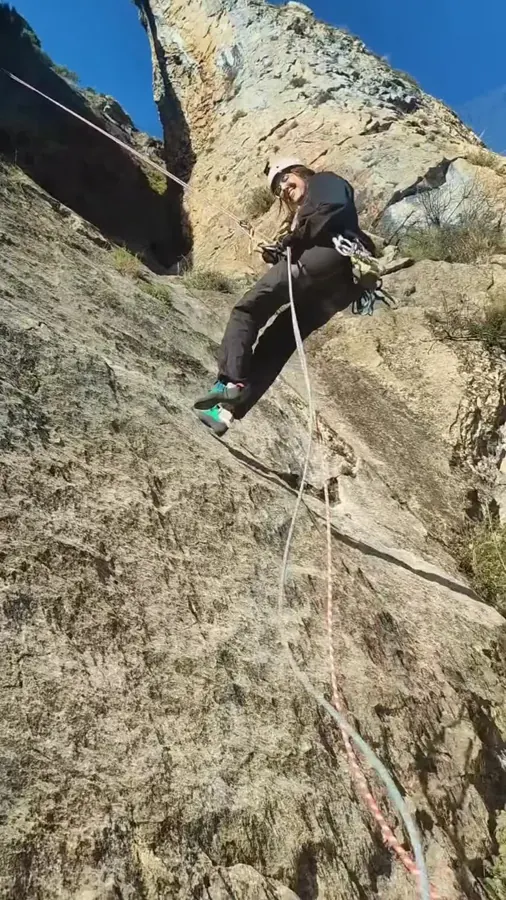
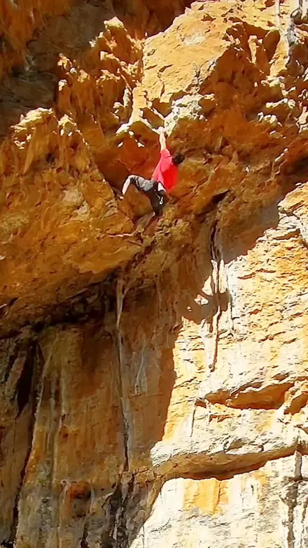
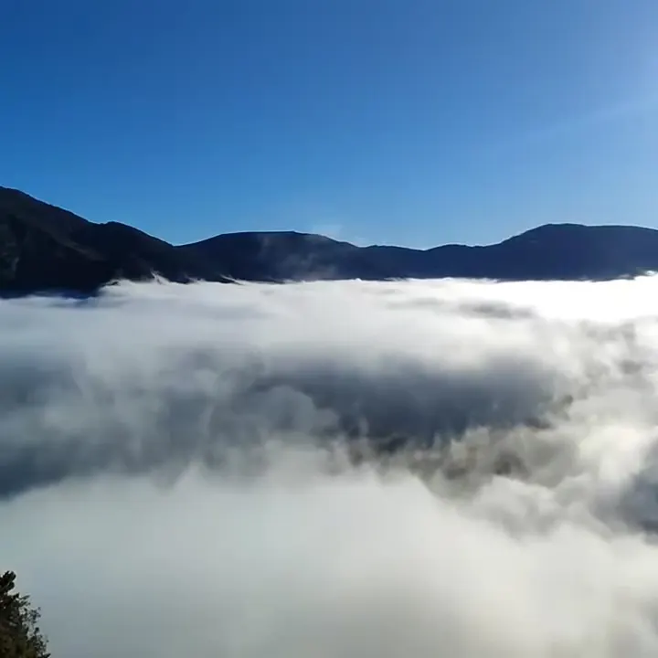
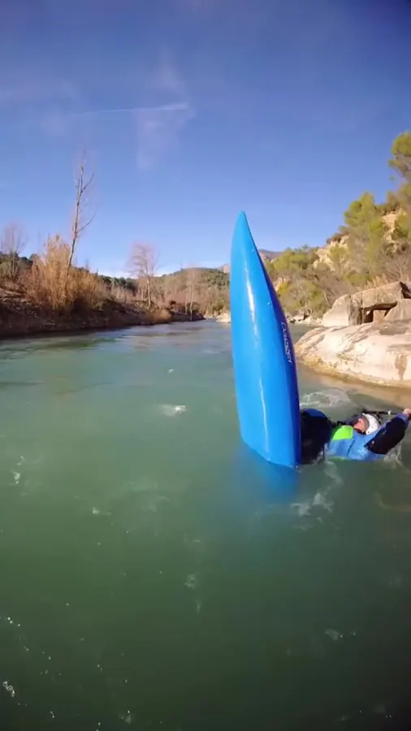
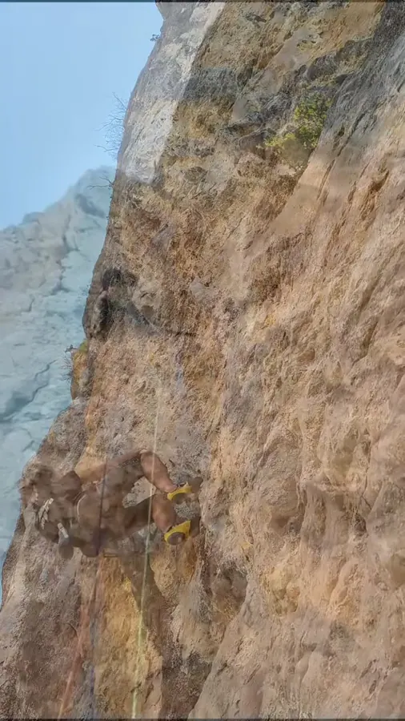
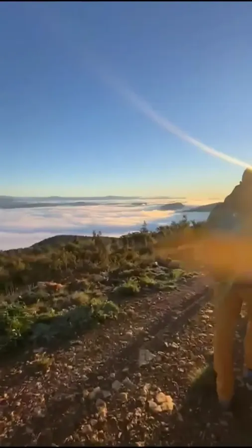

Vías de largos
Escalada en pared en Riglos y en el valle de Benasque.
Ver ficha de Vías de largos →Escalada y kayak de aguas bravas
Escalada en Riglos y el valle de Benasque, vías ferratas y formación en kayak de aguas bravas.
Explorar actividades ↓Escalada en pared en Riglos y en el valle de Benasque.
Ver ficha de Vías de largos →Recorridos equipados para descubrir la montaña desde otra perspectiva.
Ver ficha de Vías ferratas →Jornadas de escalada en roca en vías de un largo.
Ver ficha de Escalada deportiva →Propuesta en estudio para trabajar objetivos concretos en roca.
Ver ficha de Cursos →Dos zonas para empezar a imaginar una jornada de varios largos.
Escalada de varios largos en los Mallos de Riglos.
Ver ficha de Riglos →Escalada de varios largos en el valle de Benasque.
Ver ficha de Valle de Benasque →Formación para empezar en el río o seguir desarrollando tu técnica, según tu experiencia.
Ver formación en kayak
Soy José Grau, aunque muchos me conocen como Esparta. Nací en Monzón (Huesca) y crecí entre las montañas del Pirineo. Allí empecé a practicar deportes de montaña y descubrí las aguas bravas, que desde entonces forman parte de mi vida y de mi trabajo.
Con Liquid Rock quiero compartir también mi afición por la escalada. Me gusta hablar antes de salir, conocer tu experiencia y buscar una jornada en roca que encaje con tu grupo, desde una primera salida hasta una vía de varios largos.






Cuéntame qué quieres hacer, cuándo te gustaría venir y qué experiencia tiene el grupo.
El formulario se activará cuando esté configurado el correo de recepción. Mientras tanto, puedes escribir a José por WhatsApp.